Rozstania nadszedł czas. To było niezapomniane wspólne 6 lat.
Moja 6 pochodzi z polskiego salonu, jestem jej drugim użytkownikiem i jeżdżę nią od 6ciu lat.
Nigdy nie brała udziału w wypadku czy kolizji. Napisałbym, że lakier 100% oryginalny ale raz zaczepiłem o słupek na parkingu i trzeba było naprawić zderzak. Auto mechanicznie bezawaryjne, regularnie zmieniany olej i filtry i poza tym nie musiała widywać się z mechanikiem. Aktualnie świeżo po przeglądzie.
- 2.5 benzyna 192km - automat
- 147tys km oryginalnego przebiegu
- 2016 rok produkcji - pierwsza rejestracja 07.2016
- Polski salon
- Bezwypadkowa/bezkolizyjna
- Kombi
- Najwyższa wersja wyposażenia Sky Passion w jasnej skórze
- Kolor katalogowo - Titanium Flash
Dodatkowo:
- drugi komplet kół 17" alu z oponami zimowymi
- Hak oryginalny zakładany w salonie
- Szyberdach
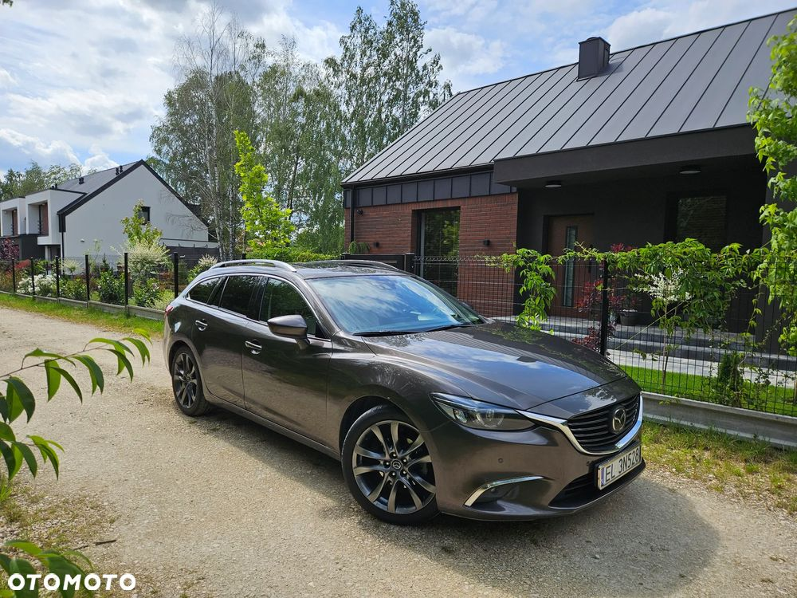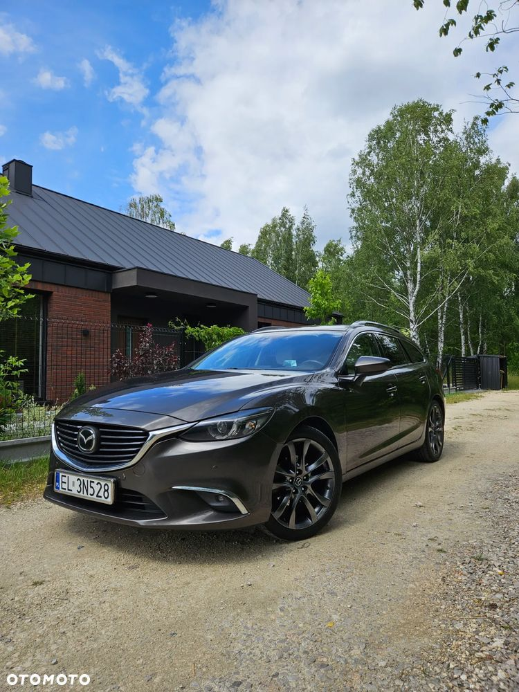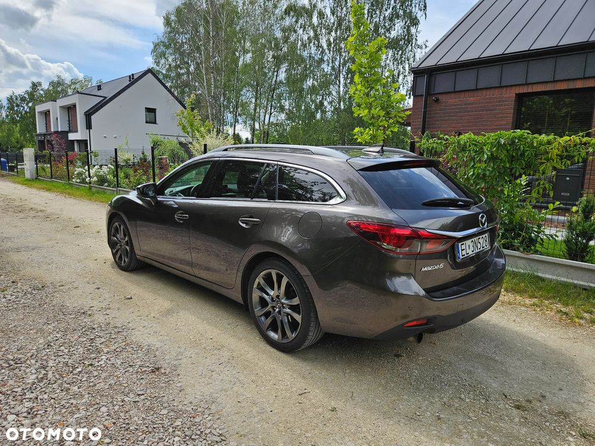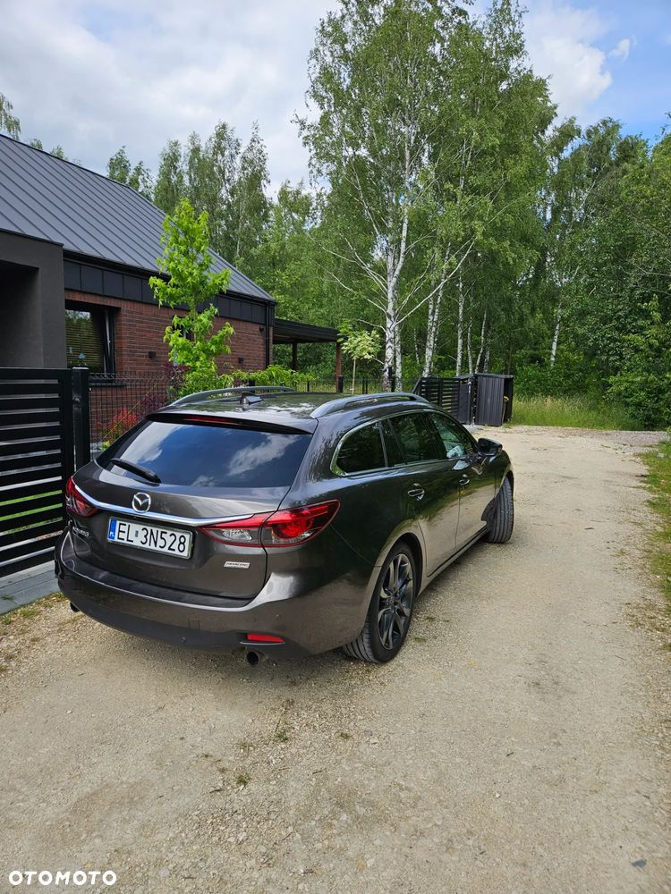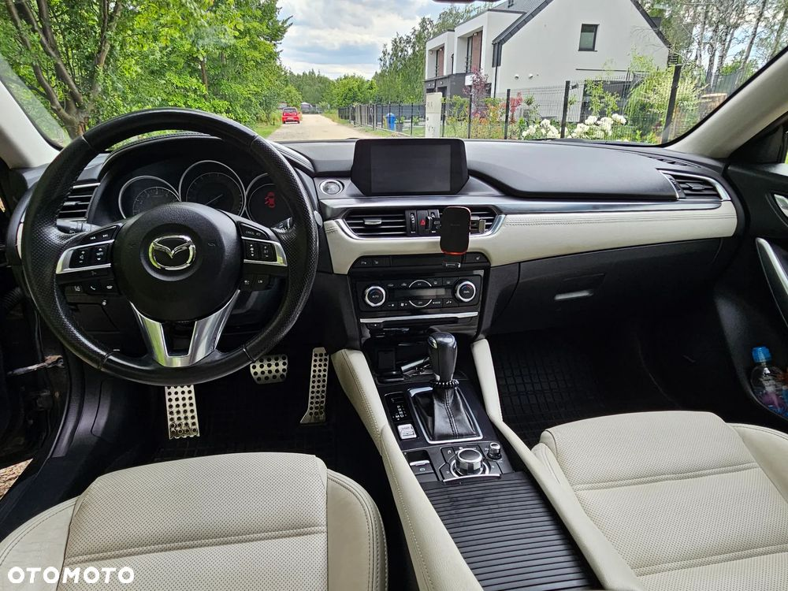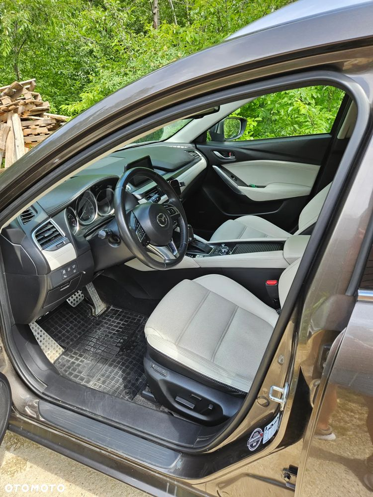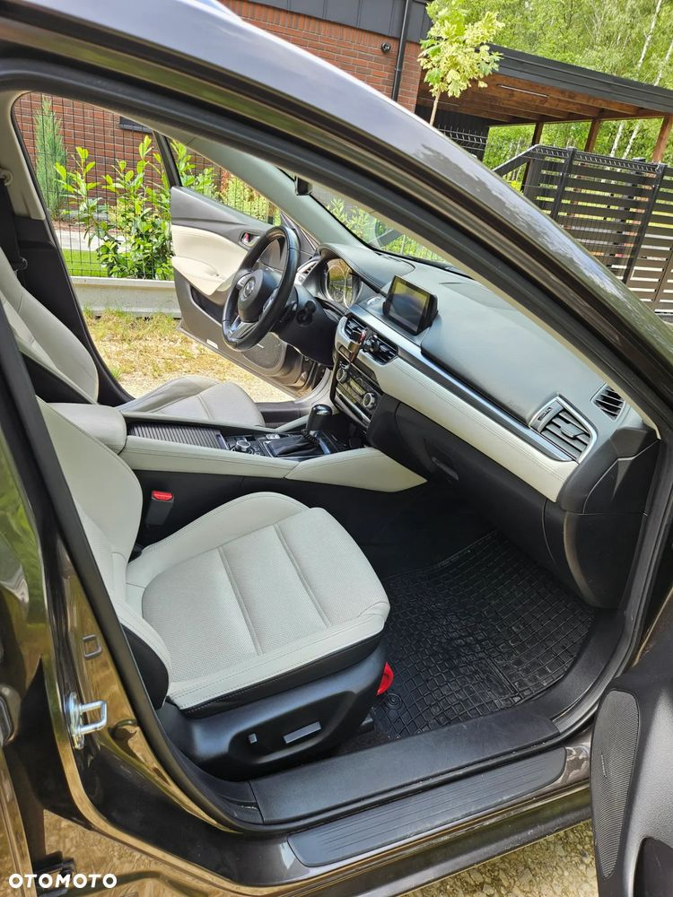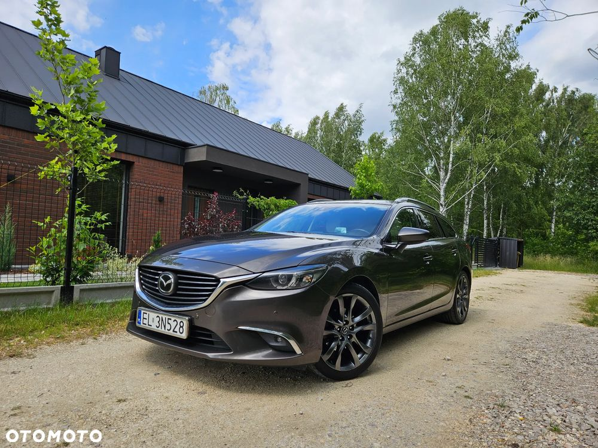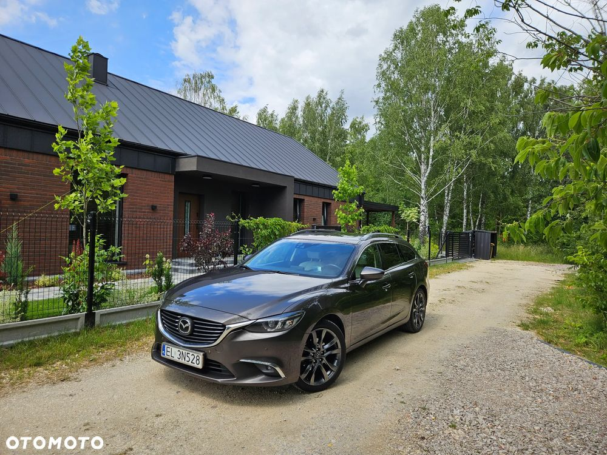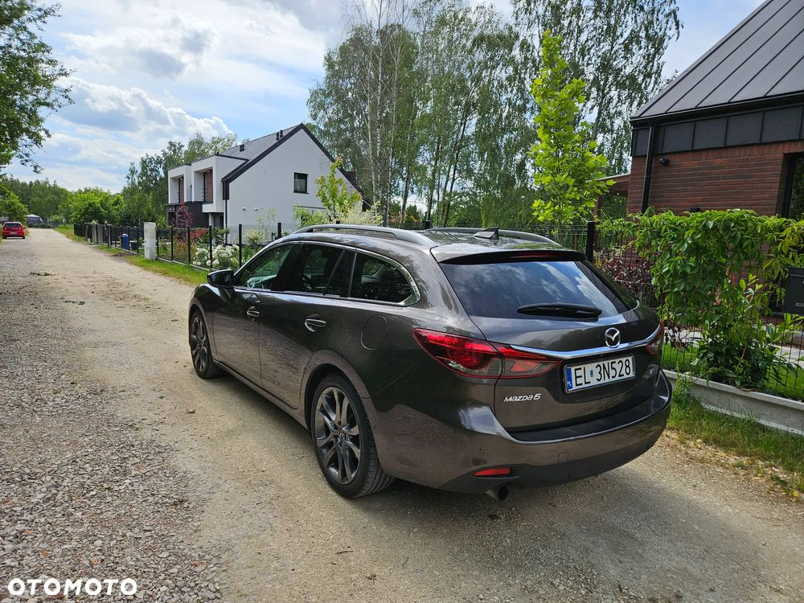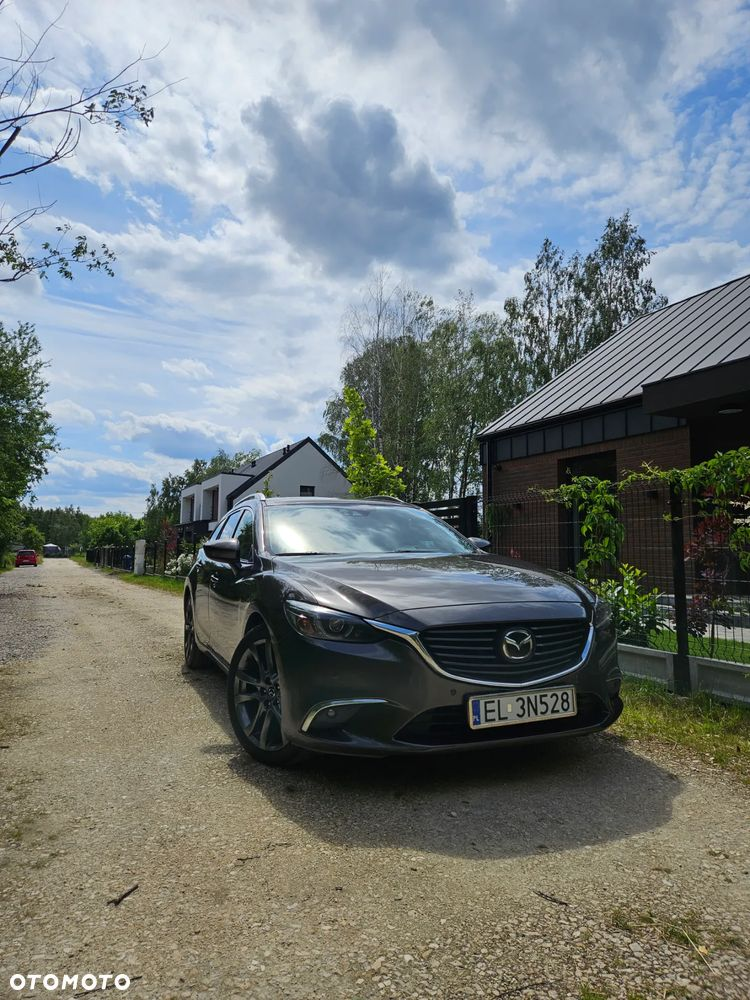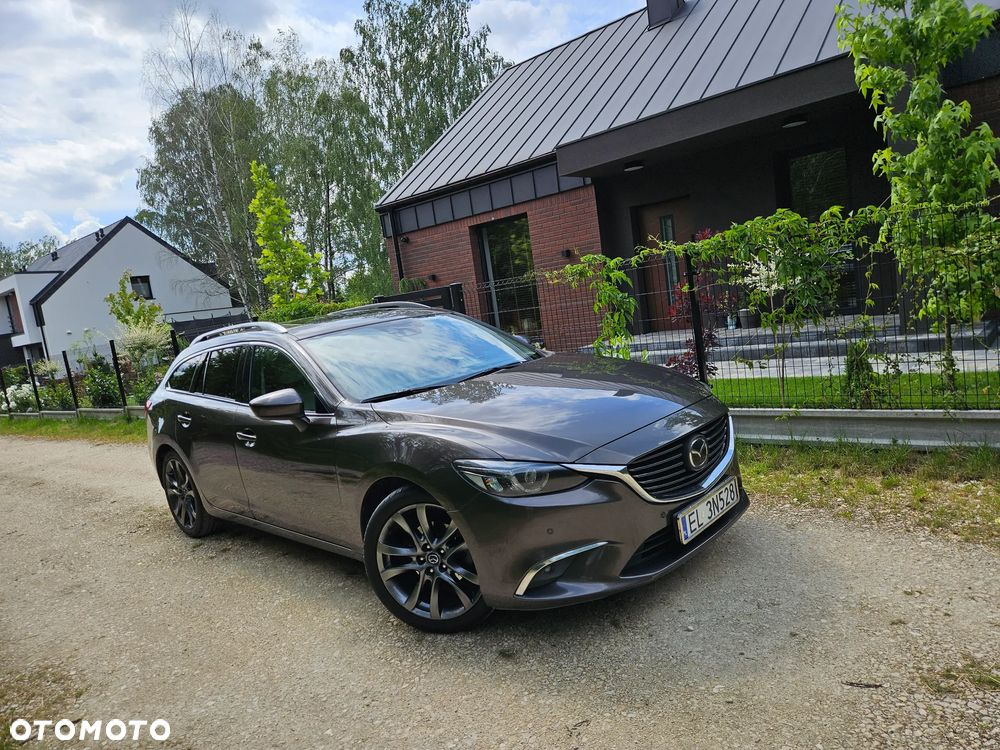